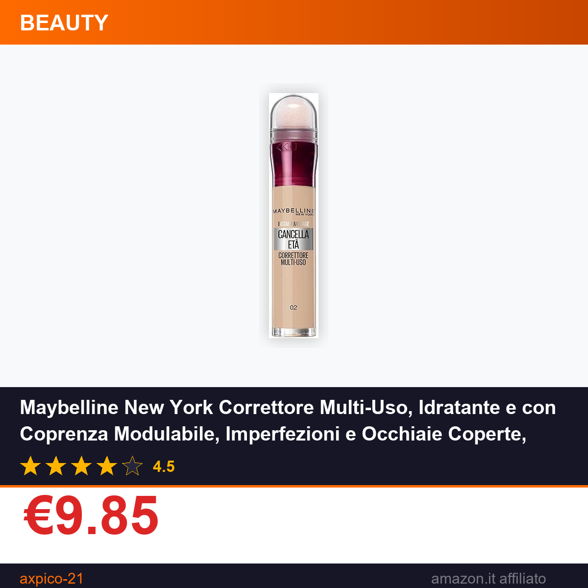

Maybelline New York Correttore Multi-Uso, Idratante e con Coprenza Modulabile, Imperfezioni e Occhiaie Coperte, Con Bacche di Goji e Haloxyl, Cancella Età, Tonalità: 02 Nude, 6,8 ml
⚠️ Il prezzo potrebbe variare. Verifica il prezzo aggiornato su Amazon prima di acquistare. In qualità di Affiliato Amazon ricevo un guadagno dagli acquisti idonei.
Se siete alla ricerca di un correttore affidabile che unisca performance coprente a una formula arricchita per la cura della pelle, il Maybelline New York Correttore Multi-Uso Cancella Età è una delle opzioni più apprezzate nel reparto beauty di Amazon. Parte della linea dedicata al contrasto dei segni dell'età, questo prodotto da 6,8 ml si distingue per la capacità di adattarsi a diverse esigenze del viso. La sua versatilità lo rende adatto sia a chi cerca un makeup naturale quotidiano che a chi ha bisogno di coprire imperfezioni più evidenti.
Caratteristiche principali
- Coprenza modulabile: permette di regolare l'intensità della copertura in base alle necessità, stratificando il prodotto senza ottenere un effetto pesante o a chiazze, ideale sia per un makeup quotidiano naturale che per una coprenza più intensa.
- Formula idratante arricchita con bacche di Goji e Haloxyl, ingredienti pensati per nutrire la pelle delicata del contorno occhi e donare luminosità, riducendo l'aspetto spento delle occhiaie.
- Tonalità 02 Nude: una nuance neutra versatile, adatta a diverse carnagioni medio-chiare, studiata per fondersi naturalmente con l'incarnato senza creare stacchi visibili.
- Multi-uso: progettato per essere applicato sia sulla zona perioculare che su imperfezioni occasionali del viso, semplifica la routine del makeup riducendo il numero di prodotti necessari.
Prezzo e offerta
Al momento il correttore Maybelline New York Cancella Età nella tonalità 02 Nude è disponibile su Amazon a €9.85, un prezzo particolarmente vantaggioso per un prodotto di una marca leader nel settore beauty. La valutazione media di 4.5 su 5 stelle, basata su migliaia di recensioni verificate, conferma l'ottimo rapporto qualità-prezzo: con meno di 10 euro portate a casa un prodotto che unisce le funzioni di correttore coprente e trattamento idratante, evitando di spendere cifre maggiori per prodotti separati. È un'offerta ideale per chi vuole rinnovare la propria trousse makeup senza sforare il budget.
Non perdere l'occasione di aggiungere questo best seller alla tua collezione beauty a un prezzo imbattibile. Acquista su Amazon